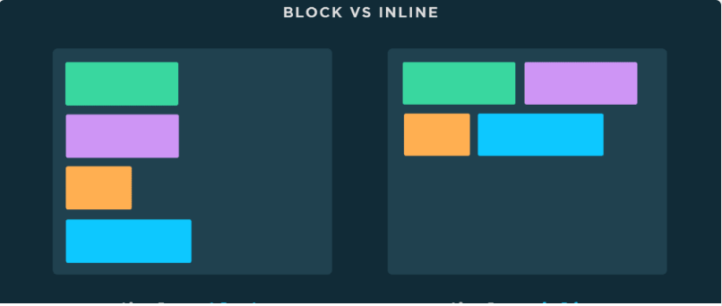

Beskriv vad element, tagg och attribut är?
Element är HTML's byggsten eller container som randerar innehållet på webbsida
Tagg är uppsättning av öppnande (<) och stängande ( >) - tecken som talar för html interpreter vilken element som kommer
Attribut är extra information om element för att definera eventuella egenskaper
Vad är en entitet? Lägg även in ett exempel på en entitet i din HTML-kod.
Entitet är specialtecken eller deras kombination, som är till för att kunna presentera "reserverade" html tecken på webbsida. Ett exempel är (<) och ( >)
Vad är skillnaden mellan ett block-element och ett inline-element?
Block element börjar alltid på ny rad och webbläsare lägger till margin innan och efter elementet. Den brukar ta all plats som finns tillgänglig.
Inline element bryter inte raden, den tar så mycket plats som den behöver.
